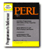
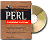

|  |  | |
| Perl Programmer’s Reference
($16.99) Osborne, 1999 380 pp. by Martin Brown |
Perl Annotated Archives ($49.99) Osborne, 1999 796 pp. by Martin Brown |
Martin Brown and his collaborators at Osborne have squeezed out two books containing nearly 1200 pages of annotated Perl references. While the monolithic, phonebook-like Perl: Annotated Archives demands a two-inch slice on your bookshelf and the cost of a dinner-and-movie-for-two from your wallet, the slimmer Programmer's Reference is no less transforming a tome, especially for the casual learner.
The Programmer's Reference, which we might call The Shorter Brown, advertises a fingertip interface to Frequently Ignored Details -- issues that never quite formulate themselves into full questions because we are too busy staying on-task during our fertile work time. A twelve-page table of contents acts as a second index.
The Shorter Brown has a 100-page section describing all of Perl's functions, but the brevity of the individual descriptions and the absence of explicit examples will leave readers with questions. Perl's syntactic flexibility -- which has given us Perl poetry, after all -- is entirely absent in Brown's tour of the base command set. [Editor's note: Brown has a third book, the 1179-page Perl: The Complete Reference, which has a similar section describing all of Perl's functions, but with examples as well.]
The real value of Perl: Programmer's Reference is the 250+ page summary of Perl's standard library. Here, Brown's brevity works in his favor. The moderately-accomplished Perl hacker will discover the trove of enormously useful modules that come with every distribution. These pages should be perused daily until the breadth and depth of Perl is appreciated. Many future reinventions of the wheel will be prevented by a knowledge of the standard library, and Brown's survey is as light and accessible as a reference should be. It's worth the $17 cover price by itself.
The short sections on execution flags and debugger and compiler options provide a useful and accessible introduction to these aspects of Perl. Brown's quick tour opens their utility to general users and reveals the connection to standard library functions that also manage command lines. Brown gives compiling and debugging a precis with just enough detail to introduce the casual user to the common experience of dumping core and how to manage the pieces. Serious Perl hackers should look elsewhere for design criteria and strategies for developing manageable code.
Brown's chapter of example code is better at demonstrating Perl's flexibility than as a didactic how-to of material covered in the other chapters. Last, Brown gives us a rare and thoughtful, annotated bibliography for Perl students of all levels of interest and ability.
Brown boasts at the beginning of Annotated Archives -- the Fatter Brown -- that his telephone book-sized work is for everyone: beginner through advanced. Indeed, somewhere within and between the 800 pages and "bonus" compact disc there lie several books, and not just for Perl devotees but for network, system, and database administrators. If you think of Annotated Archives as a collection of books on common managerial tasks unified by Perl, it justifies the $50 price tag. The best reader would be the ardent student hacker who could follow Brown's instruction blindly and obsess through the copious details on his or her own. As a shelf ballast for occasional reference, it is quite a luxury.
Then again, the $50 is cheap if you use Annotated Archives as a self-taught course in system administration. Brown's extensive use of sample code (with numbered lines for reference) is interspersed with balanced instruction expressed in clear and uncondescending prose. Occasional programmer's notes are set aside from the narrative to provide a second level of discourse of a more technical nature.
Annotated Archives hangs its hat on sample code. The book begins with examples that have a pedagogical nature and can't be immediately used by the working sysadmin who needs a quick hack. As the topics progress from basic text manipulation to practical problem solving, the code becomes more and more excisable for narrowly defined system administration problems. As the narrative roves around from HTML document management to mail handling to network management, the examples look more like a patchwork quilt and become less generalizable. The result is an educational experience that moves from the classroom to laboratory to the minutiae of the real world as the pages turn.
Annotated Archives should not be confused with CPAN, the Comprehensive Perl Archive Network. Thankfully, Brown keeps the discussion on Perl's administrative applications and steers clear of the frenzied and eclectic CPAN world.
Brown notes that all Annotated Archives source code is available at his web site as well as on the accompanying CD-ROM. Regrettably, the editors at Osborne chose to include the "bonus" CD-ROM, which may have been intended to justify the $50 cover price, but I'm sure the number of Internetless web database hackers is quite small.
In summary, the Shorter Brown is remarkably meaty for its size, while The Fatter Brown is an uncoiling rope ladder to practical Perl gurudom. Both might merit space on your bookshelf. You can buy the Shorter Brown on impulse without feeling guilty, but buy the Fatter Brown with a purpose.
_ _END_ _